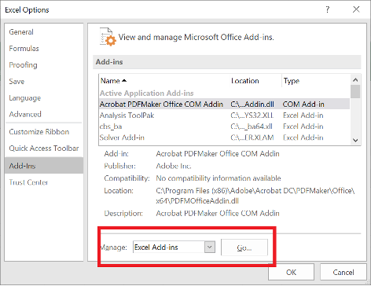
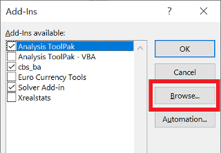
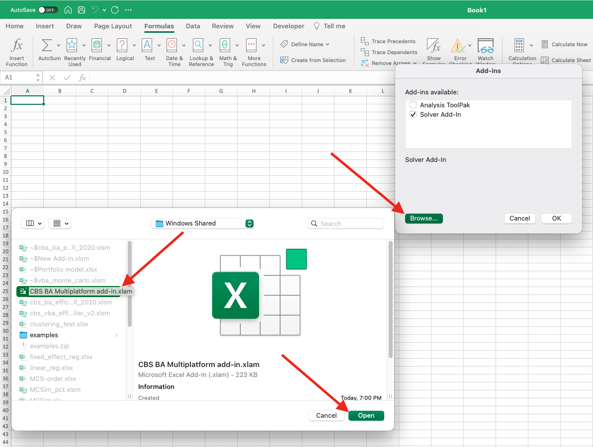
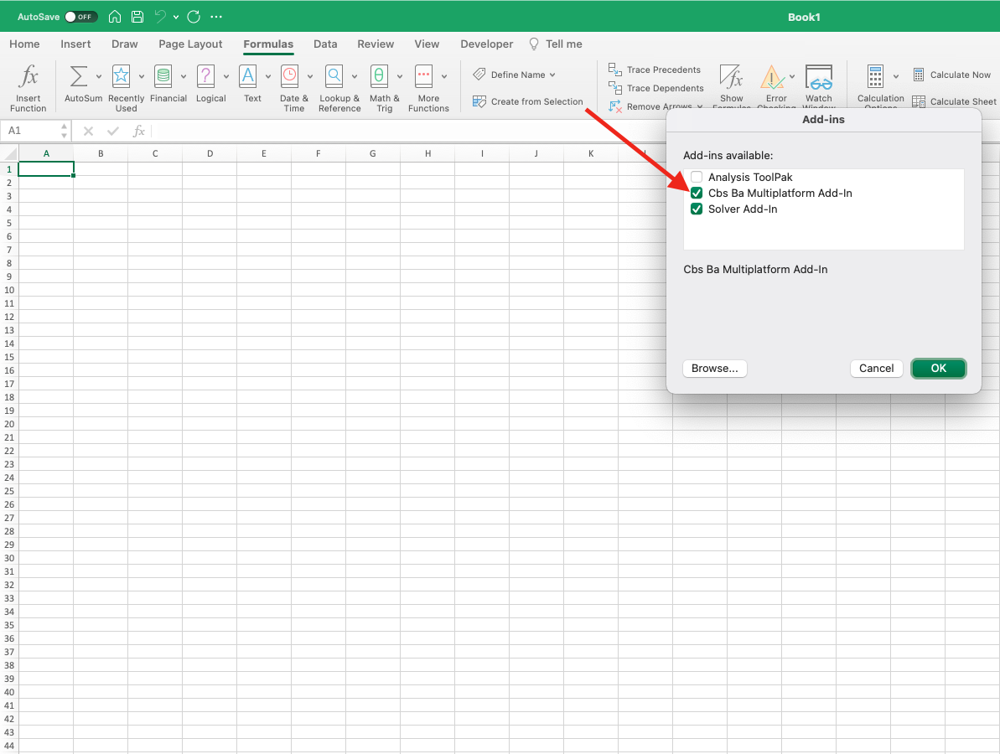

Business Analytics Multiplatform Add-in
 |
 |
||
|---|---|---|---|
| Windows Installation |
Mac Installation |
Documentation | Troubleshooting |
Windows Installation
- Make sure Excel is not running.
- Go to
C:\Program Files\and create a new folder calledcbs_ba_multiplatformif one doesn't already exits (if the folder exists and you are updating the add-in, delete the file in that folder). - Download the following file:
CBS.BA.Multiplatform.add-in.xlamand move it to the newly created folder. - By default, the add-in file may be blocked by Windows since it is downloaded from the internet. If you don't unblock it, the add-in may not work properly. To unblock the add-in:
- Open Microsoft Windows Explorer to locate and right-click the downloaded file, choose Properties from the context menu.
- Click the Unblock button in the lower right-hand corner of the resulting dialog.
- Click OK or Apply.

- Open Excel and then any workbook in Excel (not the add-in).
- Go to File → Options → Add-Ins.
- In the Manage window, select Excel Add-ins → Go.
 - In the Add-Ins available dialog, click Browse and select the XLAM file you downloaded. For complete functionality, also select the Solver Add-in in the dialog.
 - Click OK.
The add-in is now installed. This can be verified by noting that a new ribbon appears in the Toolbox.
Mac Installation
- Make sure Excel is not running.
- Go to
/Applicationsand create a folder namedcbs_ba_multiplatformif it doesn't already exist (if the folder exists and you are updating the add-in, delete the file in that folder). - Download the following file:
CBS.BA.Multiplatform.add-in.xlamand move it to the newly created folder. - Go to Tools → Excel Add-ins

- In the Add-ins available dialog, click on the Browse button
 - Select the correct add-in file from the pop-up, and click on Open. For complete functionality, also select the Solver Add-in.
- Make sure the selected add-in is enabled in the list, and disable any old versions of the same add-in that were previously enabled. The list should look as above, with only the latest version enabled.
- Click on OK.

The add-in is now installed. This can be verified by noting that a new ribbon appears in the Toolbox.
Documentation
The user manual for the add-in is available here. In addition, here are some example files to get you familiarized with the add-in functions:Troubleshooting
- When installing on Windows, make sure to unblock the add-in. If the downloaded file is not unblocked, the add-in may not function properly. Detailed instructions for unblocking are above in the Windows Installation section.
- When downloading a file which uses the add-in from another computer (e.g., practice problem solution files from Courseworks), links to the add-in functions may be broken. To fix them, go to
CBS BA Add-inFix Links to Add-In. - This add-in does not work well with the old (C++/Windows only) BA Excel add-in. If the old add-in is already installed, make sure you disable it and then follow the installation instruction above.
- If you get an message saying "This workbook is being referenced by another workbook and cannot be closed" when starting Excel, please note that this is a harmless warning, albeit annoying. To fix this, disable the add-in, restart Excel, and enable the add-in again. The Add-ins available dialog can be used to enable and disable add-ins. Please see installation instructions for Windows/Mac above for how to open this dialog.
- If you get an error saying "Compile Error: Can't find project or library", this is because the add-in uses Solver add-in internally, and some versions of Excel complain if Solver is not enabled at startup. To fix this, open the add-in available dialog by following the instructions for Windows/Mac above and enable the Solver add-in. Then restart Excel. The error should now be gone.
- Normally, you can get guidance for Excel functions by typing the function in a cell and clicking on the formula button (or typing Shift+F3). This, however, does not work well with add-in functions in Excel for Mac. To get proper guidance for add-in functions, go to Formulas -> Insert functions and type the name of the function in the search box of the Formula Builder dialog that opens. When you select the function from the search results, you will receive help on the function and its arguments.
- Always make sure to keep the add-in updated to the latest version. To check the installed version, type Ctrl+Shift+V when Excel is open. You can also go to "CBS BA Add-in" -> "Version Info". If your version is older than the one on this website, you can download the add-in file from here and follow the installation instructions to update to the latest version.
- Installing the add-in requires a version of Excel that is activated. If you are not able to install it on your Excel, try to reinstall Excel - reach out to ITG if you need help.